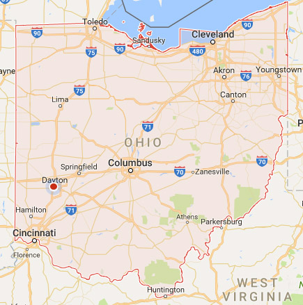
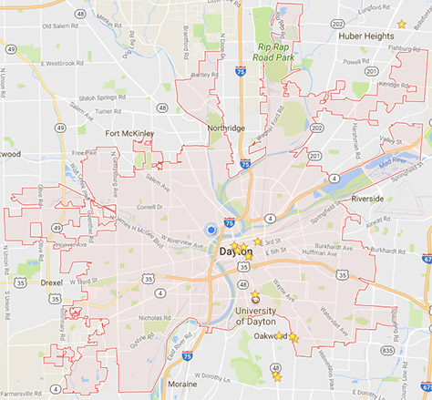

Citypages
DAYTON, OHIO
Dayton is the sixth-largest city in the state of Ohio and is the county seat of Montgomery County. Dayton hosts significant research and development in fields like industrial, aeronautical, and astronautical engineering that have led to many technological innovations. Much of this innovation is due in part to Wright-Patterson Air Force Base and its place within the community. With the decline of heavy manufacturing, Dayton's businesses have diversified into a service economy that includes insurance and legal sectors as well as healthcare and government sectors.


Quick Facts
| Population | 141,368 |
| Median Age | 33 |
| Median Household Income | $27,683 |
| Median Home Price | $66,700 |
| Walkscore | 45 |